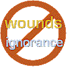

|
|
|
Alert others to
inherited wounds + unawareness |
|
 |
A Model of
Effective Service to
Troubled People, Couples, and Families
By Peter K.
Gerlach,
MSW
Member NSRC Experts
Council |

 The Web address of this
article is
http://sfhelp.org/pro/model.htm The Web address of this
article is
http://sfhelp.org/pro/model.htm
Updated
September 30, 2015
this is under construction
Clicking underlined links here will open a
new window. Other links will open an informational popup,
so please turn off your
browser's popup blocker or allow popups from this nonprofit Web site.
If your playback device doesn't support Javascript, the popups may not display.
Follow underlined links after
finishing this article to avoid getting distracted and lost
This article is part of a series for human-service
providers working with low-nurturance
(multi-problem, dysfunctional) families and with
of childhood
abandonment, neglect, and abuse ("Grown Wounded Children.")
This article offers...
-
perspective on why providing effective human-service
to troubled people and families is challenging, and
-
a summary of a 5-part clinical model of effective clinical work with these families.
This series is written to
student and practicing
counselors, life-coaches, and therapists and
their instructors, consultants, employers, program managers, and evaluators. Most of the principles
in this model apply to any human group, not just families.
 Note
- this model and series were originally designed to focus on effective
clinical work with typical U.S. divorcing families and stepfamilies. It is
being reorganized in 2009 to pertain to (a) all low-nurturance
families, and (b) persons wounded by early-childhood trauma ("Grown
Wounded Children" - GWCs). Sections
of these articles still
hilight keys to serving divorcing and stepfamily members well. Note
- this model and series were originally designed to focus on effective
clinical work with typical U.S. divorcing families and stepfamilies. It is
being reorganized in 2009 to pertain to (a) all low-nurturance
families, and (b) persons wounded by early-childhood trauma ("Grown
Wounded Children" - GWCs). Sections
of these articles still
hilight keys to serving divorcing and stepfamily members well.
This series assumes you're familiar with:
-
The
intro to this
nonprofit
educational site and the
premises underlying it
-
self-improvement Lessons
-
perspective on
human change
-
useful
clinical and
lay terms; and...
-
the
intro
to this series for clinicians, and these
premises.
|
Before continuing, pause and reflect - why are you reading this article?
What do you
 Perspective
Perspective
Families have existed in every age and culture because they are best able to
fill a range of primal
of their adults, kids, and societies.
Families' ability to fill their
members' daily and developmental needs (i.e. to nurture)
varies from low ("dysfunctional") to high ("functional").
Demographers estimate that almost half of recent American marriages have ended in
legal
Uncounted millions of
other mates and their families endure psychological divorce. More
millions never risk forming a family. This
suggests that well
over half of typical current U.S. families have a
significantly low nurturance level. This
has serious effects on
family members, future generations, and society.
Premise - a high percentage of typical American clinical clients and
patients come from low-nurturance childhoods and current families. So do
many human-service providers. Addicted, divorcing, and step families are overrepresented among them.
My experience as a family-systems therapist since 1979 suggests
that most institutions who train and license counselors, therapists, and
psychiatrists don't adequately prepare them to improve family nurturance levels. If true, this suggests that most
American (and other?) human-service providers
don't know what they need to know
to provide fully effective service to low-nurturance families and
(GWCs).
Test
this premise by taking these
and see what you learn. Then reflect and say your definition of "a
healthy, functional family" out loud, as though to a first-year grad
student. Then compare your
definition to this.
The Challenge
Premise - all social role and relationship
"problems" stem from two interactive factors: adults' (a) psychological
from low-nurturance childhoods,
and (b) their
ignorance of basic information about
personalities and relationships + effective
+
and healthy
+ effective
+ (for some)
stepfamily
and
The more
knowledgeable clinicians (like you) are about (a) these interrelated factors
and (b) causing desired systemic change, the higher
their odds of
satisfying clinical outcomes.
Providing effective counseling and therapy to
typical low-nurturance families is challenging because
their adults and supporters have little or no
awareness of...
-
this toxic cycle of [psychological
+
that spreads down the generations un-less family adults
admit and break it;
-
these
five related
that will significantly stress their family members,
and...
-
up to six vital
about themselves and human relations.
And typical adults are unaware of ...
-
how to make three wise, informed marital
and
evolve a stable,
family together.
The clinical
model proposed here is designed to help professionals help clients to (a)
become aware of the [wounds + unawareness] cycle
and (b) break it, to protect their descendents from its toxic effects. The
model includes special application to
An Overview of
the Model
This unique clinical model has five parts:
-
Theoretical foundations,
including a definition of
-
The client-family + professional
metasystem (system of systems);
-
An experience-based set of interrelated
premises about...
-
personalities, human development and behavior,
change, and
relationship problems;
-
traits of typical
high and low-nurturance family systems and wounded people;
-
six psychological
contracted by average
survivors of low-nurturance childhoods;
-
five epidemic, interactive family stressors and
how to avoid or reduce them
-
personal and professional requisites for
effective clinicians;
-
essential knowledge for lay people and
clinicians;
-
typical
divorcing-family and stepfamily system dynamics,
problems,
and solutions; and...
-
a system of clinical
assessment and intervention options and
errors;
and...
-
a practical three-step proposal for
preventing family stress and divorce; and...
-
Relevant resources for clinicians, clinical organizations,
and clients.
Here is brief perspective and
links to more detail on each of these elements.
1) Theoretical
Foundations
My clinical (MSW) training and experience since 1979 has integrated the work of
four groups of respected theoreticians and veteran human-service
professionals into this clinical
model:
-
Human-development and
family-system pioneers, principally Erik Erickson, Virginia Satir,
Murray Bowen, Carl Rogers, Jay Haley, Patricia Papp, Salvador Minuchin, Carl Rogers,
Carl Whitaker, John Gardner, Nathaniel Branden, Celia Falacov, Judith Wallerstein,
Steven Covey, Froma Walsh, and the "Milan Group" - Palazzoli, Boscolo,
Checchin, and Prata;
-
Intrapsychic, communication, and clinical-hypnosis pioneers, including
Abraham Maslow, Gregory Bateson, Milton Erickson, Francis Barber, Paul
Watzlawick, John Weakland, Richard Fish, Eric Berne, Claude Steiner,
Neale Walsch, Anne Moir, Jeffery Zeig, Thomas Harris, Hal and Sidra Stone,
Alexander Lowen, Larry Dossey, John Masterson,
Fritz Perls, Steven Gilligan, Harville Hendrix, Roberto Assagioli, John
Rowan, Deborah Tannen, Robert Bolton, and many others;
-
Childhood-trauma recovery pioneers,
including Bill Wilson et. al., Claudia Black, John Bradshaw, Sharon Wegsheider-Cruse, Janet
Woititz, Charles Whitfield, John and Linda Friel, Rokelle Lerner, Alice
Miller, Jane Middleton-Moz, Robert Ackerman, Anne Smith, Richard Schwartz, John Rowan,
James Masterson, Mary Jo Barrett, Patricia
O'Gorman, Philip Oliver-Diaz, Anne Wilson Shaef, Julia Cameron, Robert
Subby, Charles Whitfield, Pia Melody, and many others; and...
-
Pioneer stepfamily
sociologists, researchers and clinicians, including Andrew Cherlin,
A. J. Norton, Larry Bumpass, Jeffrey Larson, Paul Glick, J. A.
Sweet, Esther Wald, John and Emily Visher, Cliff
Sager et. al, Kay Pasley, Marilyn Ihinger-Tallman, and more recently John Bray, Margaret Newman,
Elizabeth Einstein, Patricia Papernow, and many others.
The five-element model proposed here is based on (a) a mosaic of ideas
from these scores of wise practitioners, theoreticians, and researchers; and (b) my experience
at integrating and selectively using my version of their ideas in my clinical practice with over
1,000 self-referred persons and couples since 1981.
Note that except for
Richard Schwartz, none of the experts above
incorporated ideas on normal personality subselves and wounds into their paradigms.
The second element of this clinical model is a group of interrelated premises
about...
 Clinical Requisites Clinical Requisites
A vital component of this clinical metasystem is the degree to which each
human-service provider involved with a given client family meets these four requirements:
-
Special
didactic and experiential
knowledge; and...
-
Key personal traits, including...
-
their
steadily
their "inner
family" of personality subselves, and...
-
clear
self-awareness and
and
-
key
attitudes about the these
complex client family systems and clinical work with them; and...
-
unique
(vs. basic) clinical
skills, and...
-
A high-nurturance, well-informed
work
environment, and...
-
Special
professional
and
client
resources.
For more
detail on each factor, follow the links.
The next element in this clinical model has three parts: (a) basic traits of
these client families, (b) a three-level framework of common family
stressors, and (c) a multi-modal framework for effective assessment,
intervention, and case supervision with these family systems.
Model, Part 3)
Premises on a Range of Related Factors
. For links to detail on the
premises (theories) that comprise this model, see
this.
Model, Part 4) Stress and
Divorce Prevention
Read this
overview of the [wounds + unawareness]
cycle. Then read about three steps that anyone (like you) can take to to help prevent
inadequate family nurturance and potential divorce trauma in their
community, state, or nation:
-
acquire didactic
knowledge of...
-
the [wounds + unawareness]
cycle and its effects,
-
for and
from psychological
wounds, and...
-
some of or all of these vital
Then...
-
patiently use this knowledge in your own life to
validate these concepts and gain experiential awareness. Then...
-
choose a local, state, or national
target group, and
devise a strategy to alert them to how this knowledge can help them
maintain
relationships and avoid major stress and
illness; Then...
-
patiently implement your plan with or without help,
within your limits, priorities, and other responsibilities, and enjoy
the satisfaction of having made a significant difference in the world.
A keystone
requisite for implementing these steps is that you work toward having your
and
guide
and support you along the way - and then encourage others to do the same.
This
series of prevention articles
includes specific suggestions tailored to different human-service
professions.
The last
component of this clinical model is a collection of...
5) Lay and Professional
Resources
This nonprofit, divorce-prevention site offers many practical resources for clients and clinicians to help
(a) improve family nurturance levels and clinical outcomes, (b) break the
ancestral [wounds + unawareness] cycle, and (c) prevent family stress
and divorce trauma. The resources include...
-
A
unique self-improvement
designed to avoid and reduce these
The
course has evolved over 27 years of professional research and over
17,000 hours of clinical practice and classroom experience with hundreds
of clients and students. Key topics are inner-wound
assessment and recovery
and effective-communication
and grieving
basics.
Each
Lesson is composed of a sequence of specific steps and options. Together, the
Lessons provide a practical way for motivated adults to...
-
make
wise commitment choices,
-
patiently evolve a high-nurturance family
together, and
-
protect their descen-dents from the toxic effects of
the [wounds + unawareness] cycle.
These Lessons also underlie this
model's frameworks for clinical assessments and interventions with
typical divorcing-family and stepfamily clients.
-
Hundreds of informational
popups thruout this site to
provide brief perspective specific concepts and links to more detail.
-
Lay and
professional
glossaries to help people
understand these Projects, and promote clear thinking and effective
communication.
-
Six
guidebooks
explaining and illustrating the 12 Projects in detail, and providing
practical suggestions and resources for implementing them. The books
integrate the key articles in this nonprofit Web site.
-
Basic-knowledge
and a
collection of free worksheets
and checklists to help co-parents and professionals assess their current
knowledge and learn what they need to learn. Many Web articles here also
include "status checks" to help with this.
-
Key questions
client co-parents and
clinicians should ask, summary answers, and links
to more detail and practical options.
-
Over 90 lay
articles on typical surface
problems (symptoms) in these complex families, and practical options for reducing
common intermediate and problems that cause them;
-
Suggestions, materials, and resources for
a comprehensive clinical
and
in-service training program
based on
this model.
-
A free modular self-improvement course for
courting couples with and
without prior kids from earlier
unions. . The course can be tailored for use by human-service
interns and professionals.
-
An experience-based framework for starting and
maintaining an effective co-parent support
group.
-
Description and illustrations of two
powerful assessment and teaching
tools - (step)family genograms and
structural maps.
-
A menu of other relevant
resources for
clients and
clinicians.
These lay and
professional articles and resources are free to download, copy, and
distribute, with these
Options
I suspect that this model is significantly different from the paradigm you
normally use with your family and typical multi-problem
clients. The attitude of your dominant subselves toward trying parts
of this model will range from enthusiasm and curiosity (a
typical true-Self reaction), to (protective)
to rejection, to
to
and indifference. Which of these best describes your attitude now?
If the model is
very different from yours,
exploring its validity and utility may seem daunting, like satisfying the
graduation requirements for a higher-education degree. As you decide what to
do with this scheme (if anything), note that it's modular -
i.e. you can progressively evaluate parts of the model, not all of it at
once. For perspective, it has taken me 26 adult years and over 17,000 hours
of client contact with hundreds of different clients to evolve and validate
this model - and I'm still learning!
You may do nothing with
this model (now), or you can choose among action-options like those below.
As you decide, wonder if you were one of your clients, what would you want
your clinician to do?:
-
Compare your
current definition of "effective clinical work" to
and decide if you're open to shift anything.
Option - on a
scale of one (consistently very ineffective) to ten (consistently very
effective), use your definition to assess your work with a variety of
clients in the recent past - e.g. the last six months.
-
Perhaps with objective
supervision or another informed colleague,
assess yourself honestly for
these four requisites. With your Self
(capital "S")
decide if you wish to invest time and effort in gaining any missing
requisites, within your situational limits. If you (subjectively)
conclude you're working in a significantly low-nurturance setting, meditate on how that affects your
professional morale and productivity.
-
Accept that
to evaluate parts or all of this clinical model fairly, you'll need...
-
most of the requisites, and...
-
a steady willingness to change some
significant current attitudes,
priorities, and clinical practices to see how that effects your
outcomes; and...
-
a patient expectation that it will take many
months of experimenting and evaluating to evolve an organic decision on
whether to adopt parts or all of this model in your work and workplace.
-
Review these
three stress-prevention steps, and
- with your Self in charge - decide if you're willing to act on at least the first two of them
for your and your family's long-term good. Picture any children or
grandchildren you care about as you do this. Option - explain the
steps to your primary partner (if any), and see if s/he (a) is guided by
her/his true Self, and (b) is motivated to do the steps with you now. If
s/he's dominated by a false self, review these
options.
-
Assess
yourself honestly for significant psychological wounds, and use your
experience to decide whether to study this "inner family" concept
further. If you find the concept credible, then begin to
assess your
individual, marital, and family clients for false-self dominance and
wounds, experiment with
interventions like
these, and see what you learn. If a false-self
dominates you, those well-meaning
subselves may sabotage your efforts to try this model. And/or...
-
Use this example of
win-win problem-solving and this summary of common
communication blocks to
assess the communication
effectiveness of several client couples or families. If you
become convinced, as I have, that most people aren't aware of their
options to improve communication effectiveness, then commit to (a) studying
and modeling the Lesson-2 basics and
here, and (b)
motivating your clients to study and use them. Then objectively
track the results with anh open mind, and see what you and they learn.
More options
toward evaluating and/or adopting parts or all of this clinical model...
-
Ground yourself thoroughly in
the three-level grieving basics
proposed here, and begin to assess (a) your personal and your
family's grieving policies, and clients' (b) knowledge of these basics,
(c) their personal and family grieving
and (d)
of blocked grief. Look for trends among a range of clients. Experiment
with appropriate Lesson-3 interventions,
and see what you learn. And/or you can...
-
Assess
several client couples for (a) low-nurturance
ancestry, (b) significant false-self
dominance and
and (c) unawareness of effective-communication
basics, blocks, and
options, regardless
of their presenting problems. Look for common trends. Then in the
context of your clients' presenting (surface) problems, experiment with
Project-8 interventions like these, and see
what you all learn.
-
With an open mind and your Self in charge, study the
basic concepts of (a) the [wounds + unawareness] cycle and (b)
stepfamily basics, hazards, and these
12 projects, and then experiment with Lesson 7, 4, 9, and 10
interventions with several stepfamily clients regardless of their
developmental stage.
If you wish to
discuss the model and/or action-options like these with me via
email or over the
phone
, I'm glad to do so while my health permits. I'm interested in
your view of and experience with it.
Recap
This and related articles for clinicians exist because there currently
seems to be no comprehensive experience-based model of effective service to typical divorcing-family and stepfamily clients available. This
article (a) summarizes why clinical work with these complex multi-problem
families is more complex than with average intact biofamilies,
and (b) outlines five elements of a unique systemic model of effective
clinical service to these families. The model has evolved over 27 years' didactic
study and clinical experience with hundreds of these clients.
The five elements of this model are...
-
Theoretical foundations,
including a definition of
-
A definition of a clinical
metasystem (system of systems),
including the client family system;
-
An experience-based framework of (a)
traits of typical divorcing-family
and stepfamily systems, (b) three levels of common client-family "problems,"
and (c) an integrated, multi-modal framework of clinical
assessment and Intervention options and
errors; and...
-
a three-step proposal for
preventing family stress and divorce; and...
-
A collection of resources for clinicians, clinical organizations,
and clients.
Links lead to more perspective and detail on each of
these elements.
Key
factors that will determine whether this model is credible and useful to you
is whether (a) your true Self
your personality, and whether you
(b) are open to evaluating and accepting the pervasive [wounds +
unawareness]
that
appears to stress most families and organizations in our
culture. Another key factor is how receptive you are to studying and
applying these basic topics and teaching them to your clients, as part of
your clinical goals and strategies.
+ + +
site intro / course outline / site search / definitions / chat / contact
Updated
September 30, 2015
|